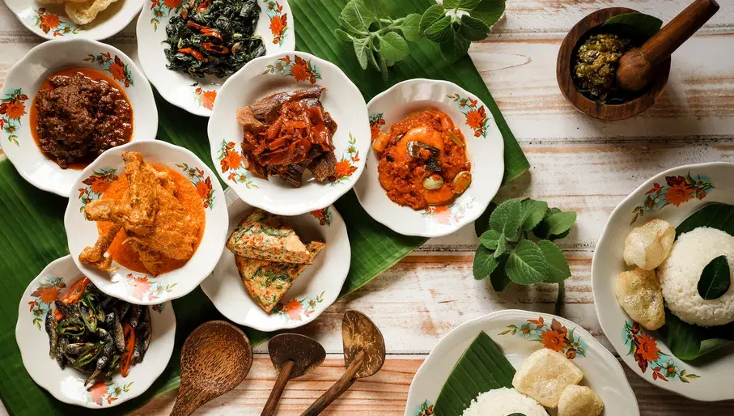

Probably one of the most famous Dutch dishes, Poffertjes are small pancakes, baked in an iron skillet, and traditionally served with melted butter and dusted with icing sugar.
₹250/-
Hollandse nieuwe haring
Pickled fish always seems to be somewhat controversial in the UK. A dish that you may try once or twice, but not one that typically makes it to the dinner table of many homes.
₹350/-
Pannenkoeken
Unlike the thick and fluffy American variety, Dutch pannenkoeken (pancakes) have a thinner, crepe-like consistency with more surface area for delicious toppings.
₹250/-

Rijsttafel
Order a rijsttafel for the authentic Indish-Dutch experience, a medley of small dishes from all over the Spice Islands, developed in the times of Dutch colonisation to allow colonials to sample dishes from around Indonesia.
₹280/-
Kaaskroketten
There are several typical Dutch deep-fried snacks, but almost all are made of meat or fish. The only vegetarian option, usually available in pubs and bars are cheese croquettes.
₹250/-
Friet
Dutch fries are often cut in wider pieces than the classic fries and they are always served with sauce. Usually it’s mayonnaise or sometimes ketchup